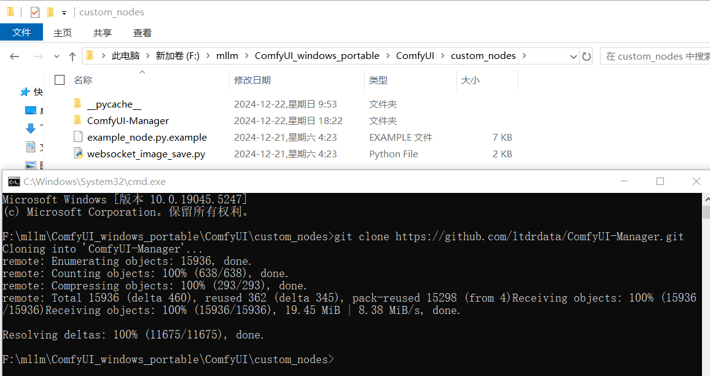
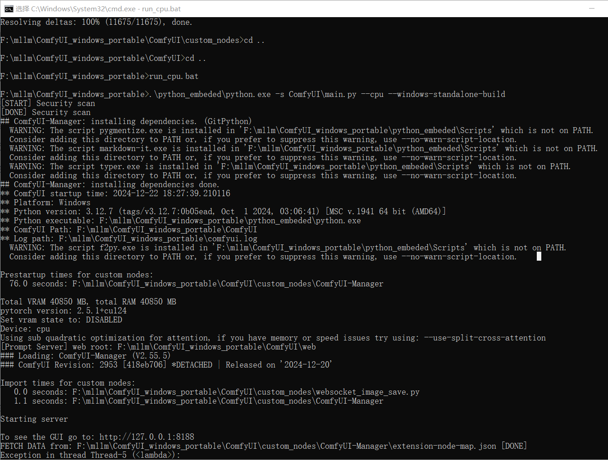
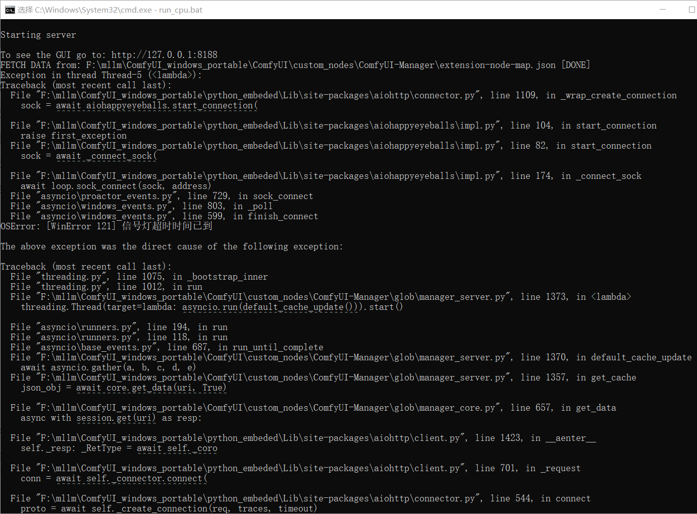
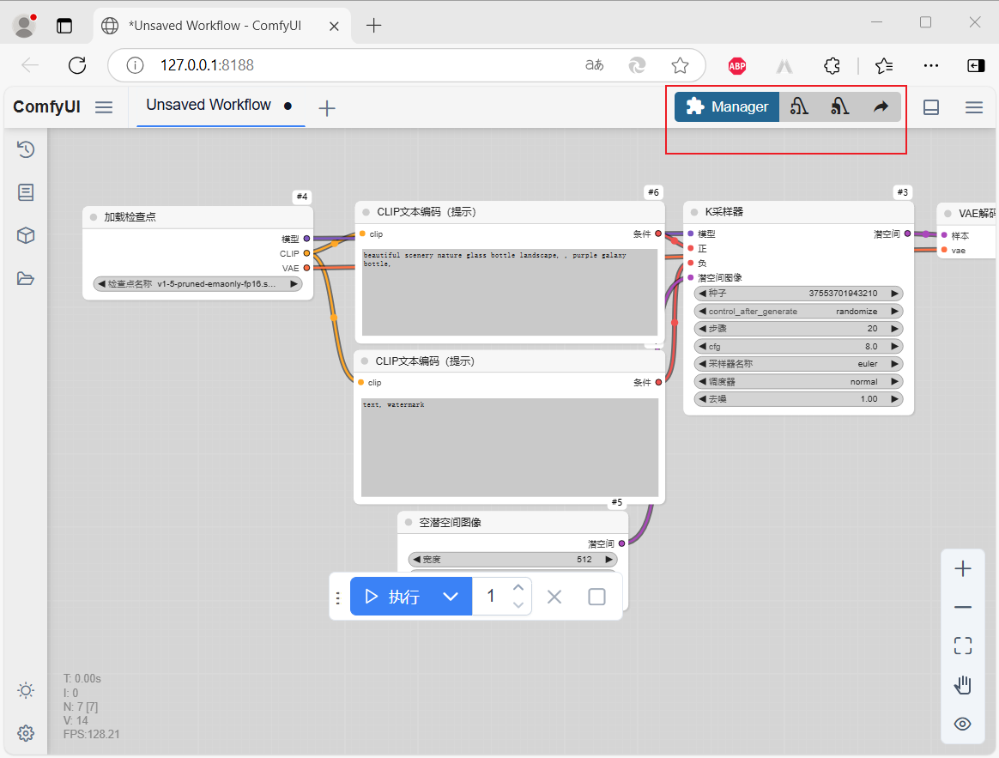
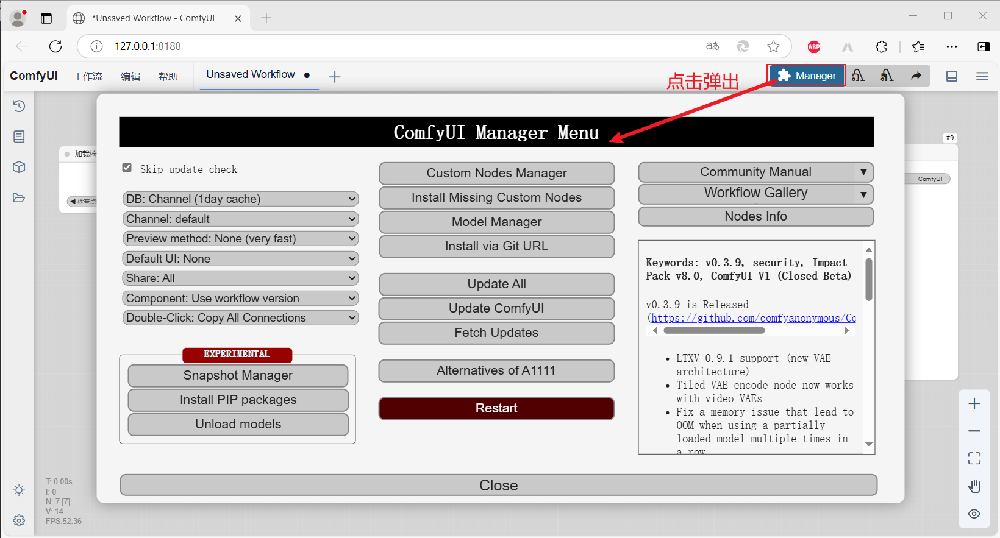
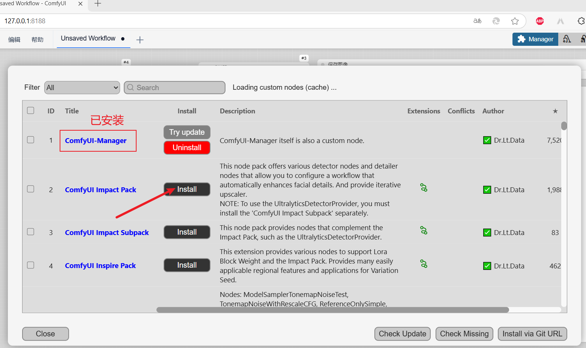
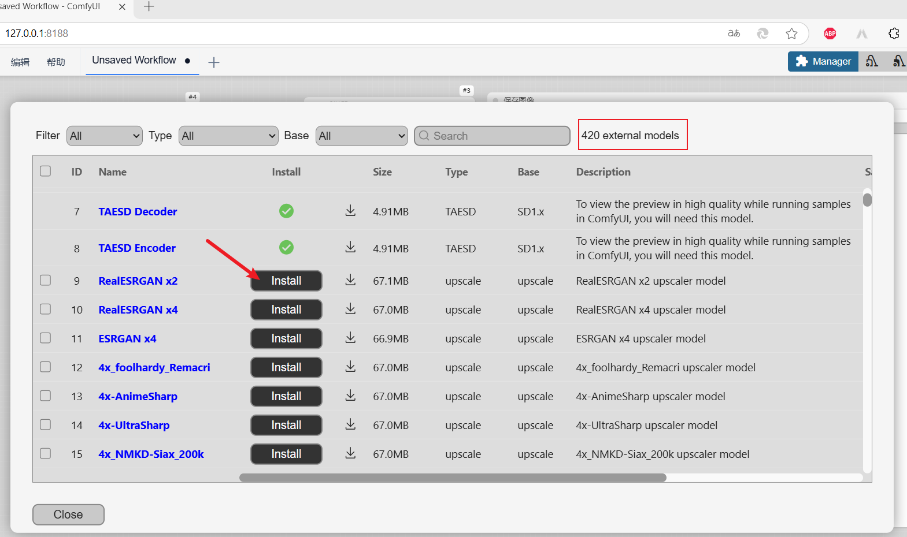
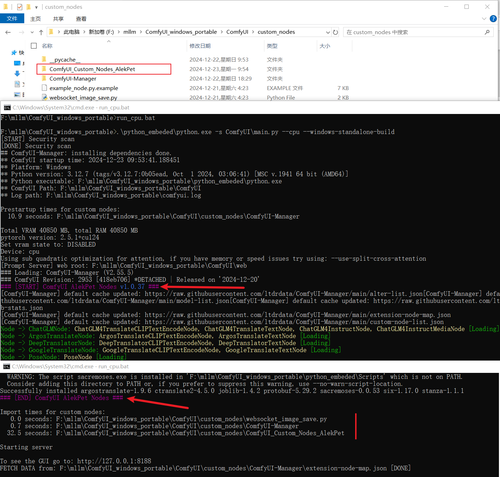
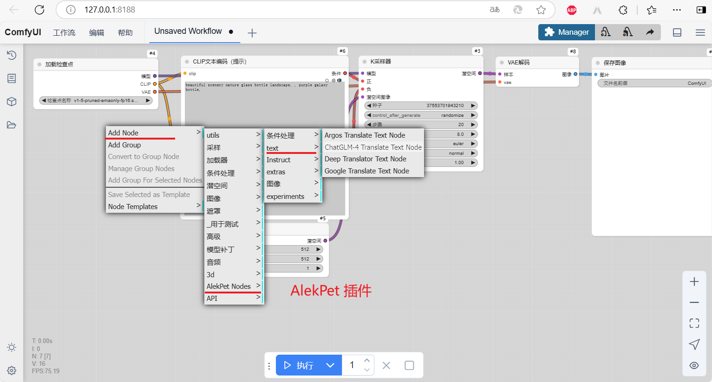
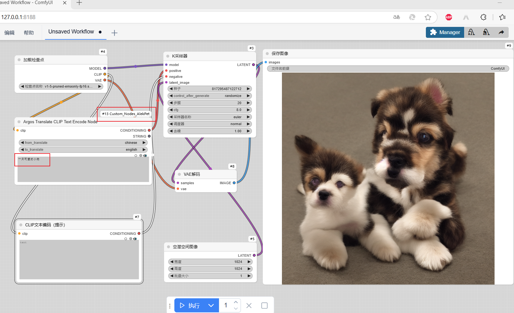

ComfyUI 自定义节点
ComfyUI本来就已经很强了，更强的是他还支持插件（自定义节点），最强的是已经有很多大神为他开发了插件……
安装方法
手动安装
这里以安装ComfyUI-Manager插件为例。该插件是 GitHub 上的一个项目，弄下来之后扔到ComfyUI_windows_portable\ComfyUI\custom_nodes这个目录下即可。你可以在该插件目录进入 cmd 或者 powershell ,之后使用 git 克隆；你也可以到 GitHub 上下载 zip 格式的项目，之后解压到插件目录即可。
插件地址：ltdrdata/ComfyUI-Manager: ComfyUI-Manager is an extension designed to enhance the usability of ComfyUI. It offers management functions to install, remove, disable, and enable various custom nodes of ComfyUI. Furthermore, this extension provides a hub feature and convenience functions to access a wide range of information within ComfyUI.
这里是 git 克隆的方式，如下图：

克隆成功之后，回到根目录，执行run_cpu.bat启动项目。在启动过程中，你会看到一些关于ComfyUI-Manager插件的一些日志和一些错误（网络的问题，访问 GitHub），如下图：


虽然有一些异常，但是界面还是正常出来了，你可以和没有安装之前对比一下：

点击“Manager”按钮，弹出的是该插件的管理界面，如下图（记作：图5）：

到这里已经说明ComfyUI-Manager插件安装成功了，该插件的更多功能，请看后面章节。
ComfyUI-Manager 安装
除了上面的安装方式，你还可以使用ComfyUI-Manager插件来安装插件。你可以点击“图5”中的“Custom Nodes Manager”按钮，打开自定义节点（插件）列表页面，在这里安装插件，如下图：

这个列表页面可能不是一帆风顺的，根据你的网络而定。就像我第一次安装ComfyUI-Manager之后，打开这个页面是没有数据的。这也是后面网络可以了，才截的图。
插件
这里列举一些自己用过的插件
ComfyUI-Manager
这里再详细的介绍一下ComfyUI-Manager插件的用法
安装插件
上面已经说了，咱就不重复了
模型管理
可以点击“图5”中的“Model Manager”按钮，打开模型列表页面，在这里管理模型，如下图：

AlekPet
插件地址：AlekPet/ComfyUI_Custom_Nodes_AlekPet: Custom nodes that extend the capabilities of Comfyui
先看一下 git 克隆之后，程序重启和界面中展示该插件的截图：


Translate CLIP Text Encode Node
怎么着也得试试这个翻译节点，在默认工作流的基础上，将正向提示词节点替换成该翻译节点，顺便生成了一张图片，如下图：
